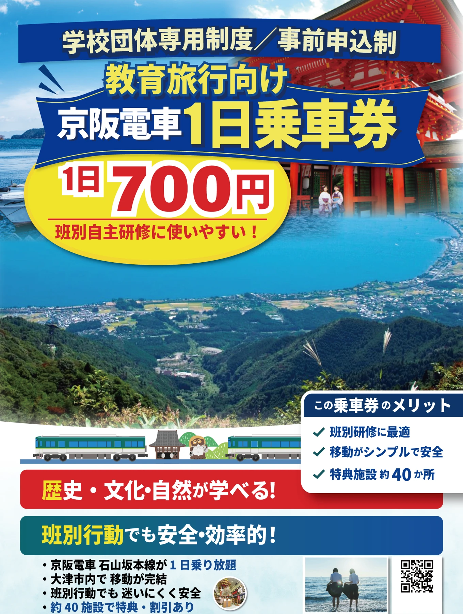
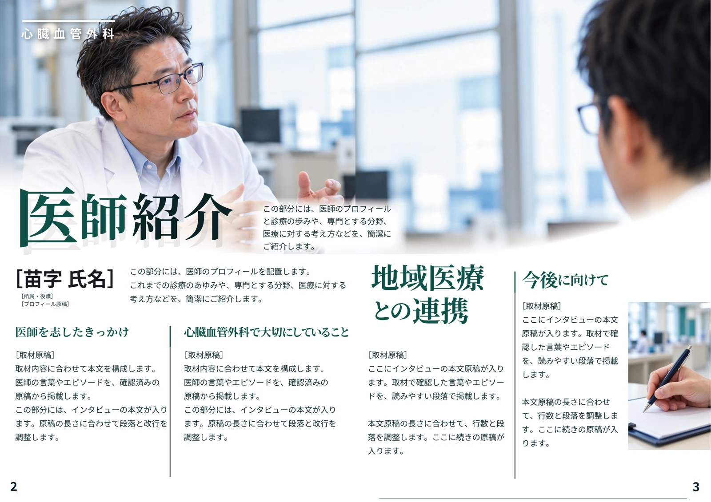
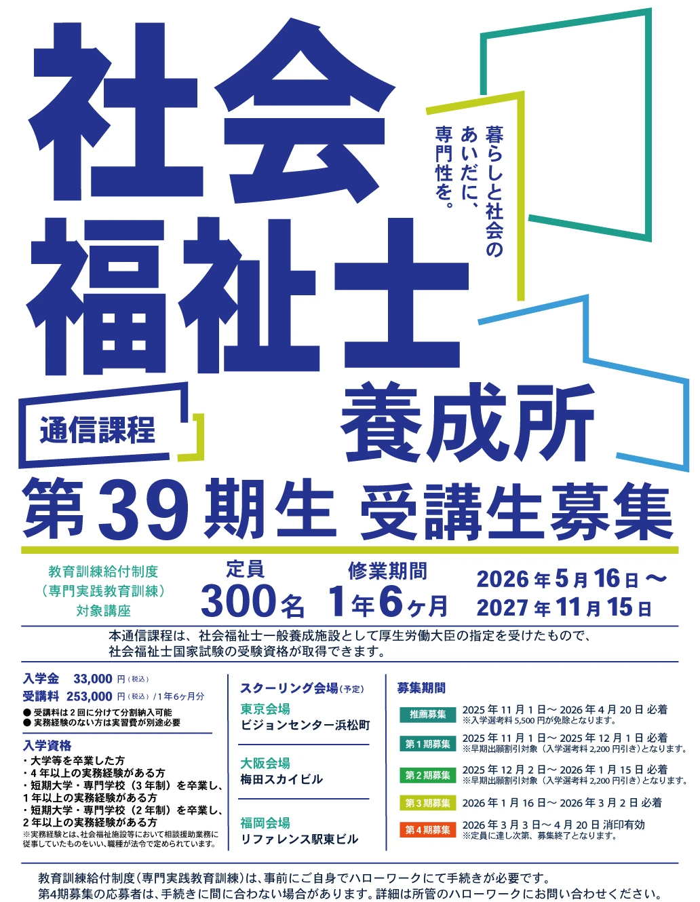
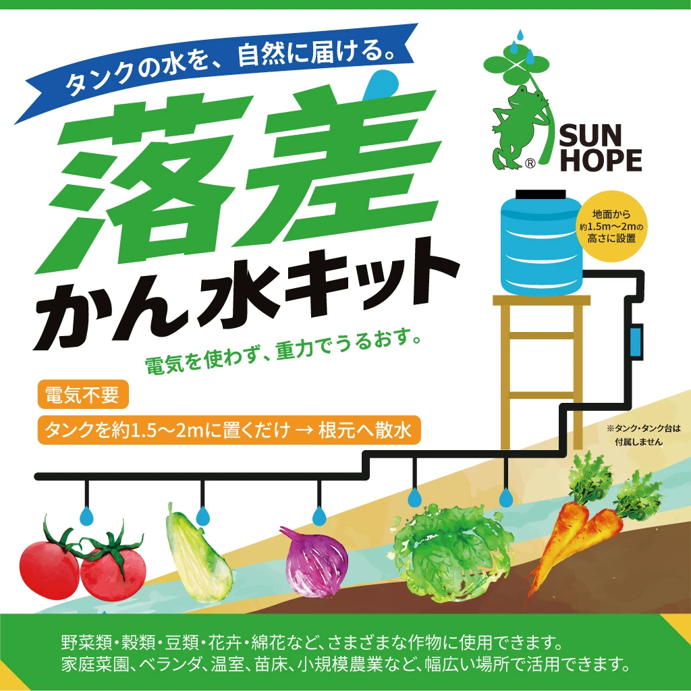
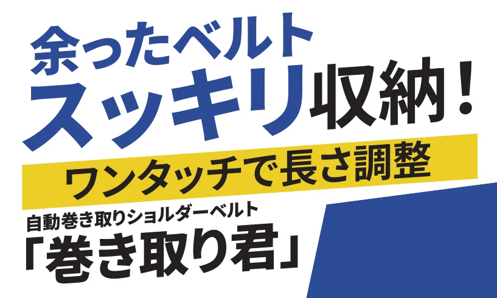
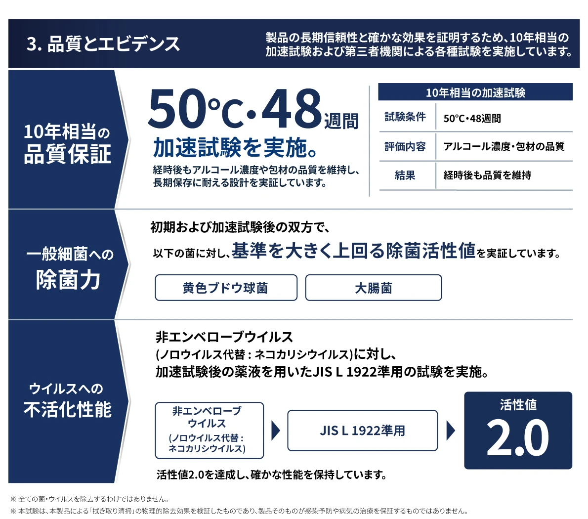
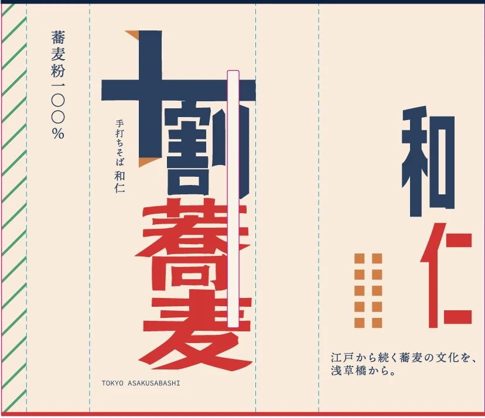
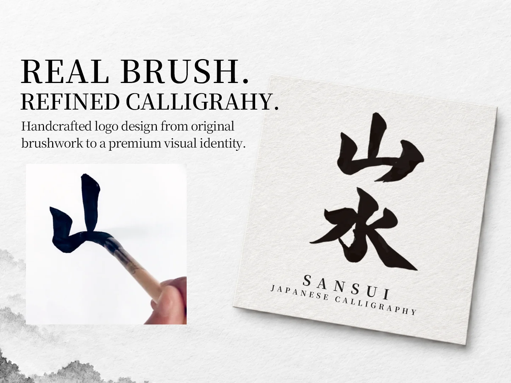

教育旅行向け 観光チラシ
価格・利用メリット・観光ビジュアルを整理した、教育旅行向けの案内チラシ。公開ポートフォリオの制作例として紹介し、当選実績とは区別しています。
観光案内チラシ / 表面抜粋Lancersの正規公開作品へ ↗Misato Sato — SUMI / MOTION
チラシ・リーフレット・パッケージ・ロゴ。
内容を整理し、紙面と画面に組み立てます。


制作紹介
チラシ、リーフレット、パッケージ、ロゴ。
使う媒体に合わせた制作物をご覧いただけます。
当選実績、制作提案、自主制作を分けて紹介しています。採否が未確認の制作物は、その旨を記載しています。
8件の制作物を表示
価格・利用メリット・観光ビジュアルを整理した、教育旅行向けの案内チラシ。公開ポートフォリオの制作例として紹介し、当選実績とは区別しています。
観光案内チラシ / 表面抜粋Lancersの正規公開作品へ ↗
大きなタイポグラフィと配色で、募集内容を整理。
募集ポスター / 表面抜粋
商品の用途と仕組みを、見出し・図・配色で伝えるパッケージ。
パッケージ正面 / 当選確認済み
「余ったベルト、スッキリ収納！」を中心としたパッケージの文字組み。写真とラスタ効果を省いた表示用抜粋で、納品物全体の再現ではありません。全体は正規公開作品でご覧いただけます。
当選実績 / 写真・ラスタ効果を省いた正面見出しの表示用抜粋Lancersの正規公開作品へ ↗見出し・本文・余白の強弱で、情報を読み進められる見開きに。選定中の提案で、写真はAIによる仮素材、誌名・本文は仮置きです。
見開き紙面 / 選定中のコンペ提案
商品特長・品質情報・仕様をA4両面に整理した未採用提案。ここでは写真を含まない裏面の文字・図表部分を抜粋しています。冊子や納品実績ではありません。
未採用コンペ提案 / A4両面リーフレット・裏面の図表部分抜粋
文字組みと色面で見せる、外スリーブのデザイン提案。
外スリーブ展開図 / 抜粋
手書きの筆文字をデジタルに整えた、自主制作のロゴスタディ。受注・採用実績ではありません。
筆文字ロゴ / 自主制作クライアントワーク
既存サイトで公開しているクライアントワーク。
担当はモーションデザイン・ロゴアニメーションです。
既存ブランドマークのロゴアニメーション。筆の質感とデジタルの動きを組み合わせています。
手仕事の個性を持つロゴに合わせ、形を少しずつ組み上げるように動きを設計しました。
akirlan / Lancers
正規公開ページで確認した情報を掲載。
当選・未採用・選定中・自主制作を分けています。
Lancers公開プロフィール、2026年10月17日確認。シルバーランク。評価件数・完了率は異なる指標です。最新情報はプロフィールでご確認ください。
パッケージデザイン。公開提案27708054で当選を確認。
パッケージデザイン。公開提案27653308で当選を確認。
公開ポートフォリオの制作例。採用・受注実績とは区別しています。
体験会を想定して制作したサンプル。受注・採用実績ではありません。
未採用の提案。冊子ではなく、A4両面の紙面デザインです。
選定中の提案。AIによる仮写真・誌名と本文の仮置きを含む制作案です。
選定中の提案。受注・採用実績とは区別しています。
制作範囲
必要な制作物からご相談いただけます。
点数、使用先、素材の状況に合わせて範囲を決めます。
読み手と目的に合わせて情報を整理。募集・告知・販促物を制作します。
商品やサービスの内容を、見出し・図・本文の流れで伝えます。
商品の特長と見せ方を考え、展開図や印刷仕様を確認して仕上げます。
文字・シンボルのデザインと、既存ロゴを生かすアニメーション。
費用・納期・修正範囲・納品形式は着手前に確認します。掲載画像の製品情報・募集内容は制作時点のものです。
進め方
目的と制作条件を、言葉で確かめながら。
届けたい相手、必要な制作物、ご希望の時期を教えてください。
素材、点数、サイズ、修正範囲と納品形式を着手前に共有します。
デザインの意図をお伝えし、フィードバックをもとに調整します。
印刷用データやWeb用画像など、合意した形式で整理してお渡しします。
制作スタディ
以下は受注・採用実績ではなく、自主制作です。
FAQ
目的、使用先、参考にしたい雰囲気だけでもお送りください。必要な情報をメッセージで整理します。
掲載文、写真、ロゴ、印刷サイズなど、手元にあるものをお知らせください。支給素材の使用範囲も確認します。
制作物の種類、点数、素材の有無、修正範囲を伺い、個別にご案内します。予算と希望日程をお知らせください。
わかる項目だけ選んでください。
入力内容はこのページから送信されません。
文章をコピーし、LancersまたはFiverrのメッセージに貼り付けて送ってください。
お問い合わせ
チラシ一枚から、商品やブランドの見せ方まで。
わかる範囲の短いメモからご相談いただけます。
日本語・英語のメッセージでご相談いただけます。英語は文章で対応します。通話は必須ではありません。